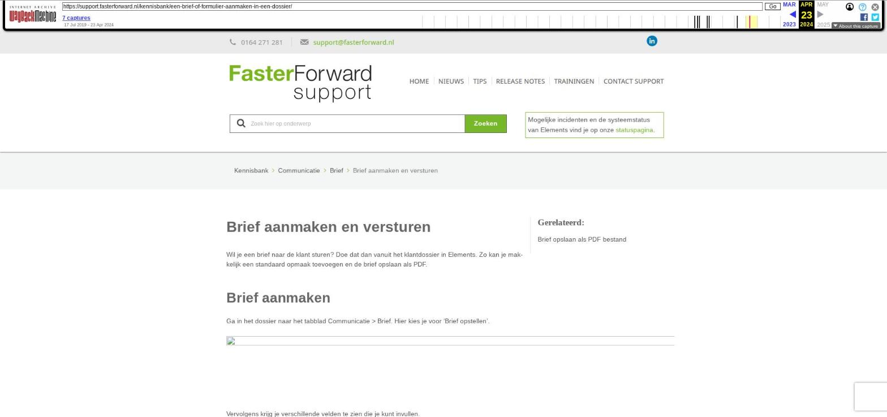

Brief aanmaken en versturen

Tekstinhoud
Brief aanmaken en versturen
Wil je een brief naar de klant sturen? Doe dat dan vanuit het klantdossier in Elements. Zo kan je makkelijk een standaard opmaak toevoegen en de brief opslaan als PDF.
Brief aanmaken
Ga in het dossier naar het tabblad Communicatie > Brief. Hier kies je voor 'Brief opstellen'.
Vervolgens krijg je verschillende velden te zien die je kunt invullen.
Template: Bij het opstellen van een brief is het verplicht om een template te kiezen, deze bepaalt namelijk de lay-out van jouw brief.
Betreft taak: hiermee koppel je de brief direct aan een taak.
Betreft product: Om een e-brief te koppelen aan een specifiek product, selecteer je hier het product.
Koppelen aan een polis kan alleen als je al werkt met mutatievoorstellen.
Standaard tekst: Daarnaast is het mogelijk om een standaard tekst of handtekening in te voegen. Selecteer deze aan de linkerkant en klik vervolgens op het + teken erachter om deze toe te voegen aan jouw brief.
Stel jouw brief verder op naar wens en klik daarna op 'Opslaan'.
Brief versturen
Als je de brief wilt versturen via de post, klik je op 'Afdrukken'.
De brief opent nu in een nieuw tabblad. Hier kun je het document afdrukken of opslaan als .PDF.
Laatste update: 28 oktober 2022
Was deze informatie nuttig?
Ja Nee